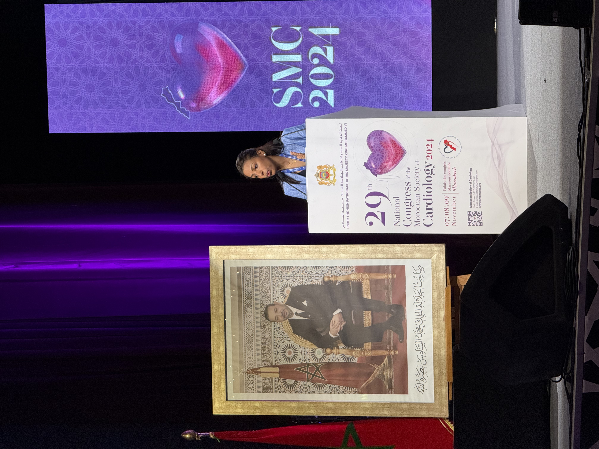

Le cabinet
Un espace pensé pour vous


Le cabinet
Découvrez le parcours et la vision du Professeur Bensahi Ilham, cardiologue et rythmologue interventionnelle à Casablanca.

Qui suis-je ?
Cardiologue et rythmologue interventionnelle, la Professeur Bensahi Ilham est une spécialiste reconnue dans le domaine des maladies cardiovasculaires et des troubles du rythme cardiaque. Exerçant au sein de son cabinet à Casablanca, elle offre à ses patients une prise en charge complète et personnalisée.
Formée dans les meilleures institutions médicales, elle conjugue rigueur scientifique et approche humaine pour accompagner chaque patient avec bienveillance. Son engagement envers l'excellence médicale et l'écoute attentive est au cœur de sa pratique quotidienne.
Parcours
Cardiologue et rythmologue interventionnelle en exercice libéral, spécialisée dans le traitement des arythmies cardiaques et la cardiologie générale.
Pratique avancée des techniques interventionnelles : ablation par cathéter, implantation de dispositifs cardiaques, explorations électrophysiologiques.
Formation approfondie en rythmologie et cardiologie interventionnelle dans les centres d'excellence.
Formation médicale complète avec spécialisation en cardiologie, obtention du titre de Professeur.
Le cabinet
Consultez Bensahi Ilham pour un bilan cardiovasculaire ou un suivi spécialisé. Notre équipe est à votre écoute.